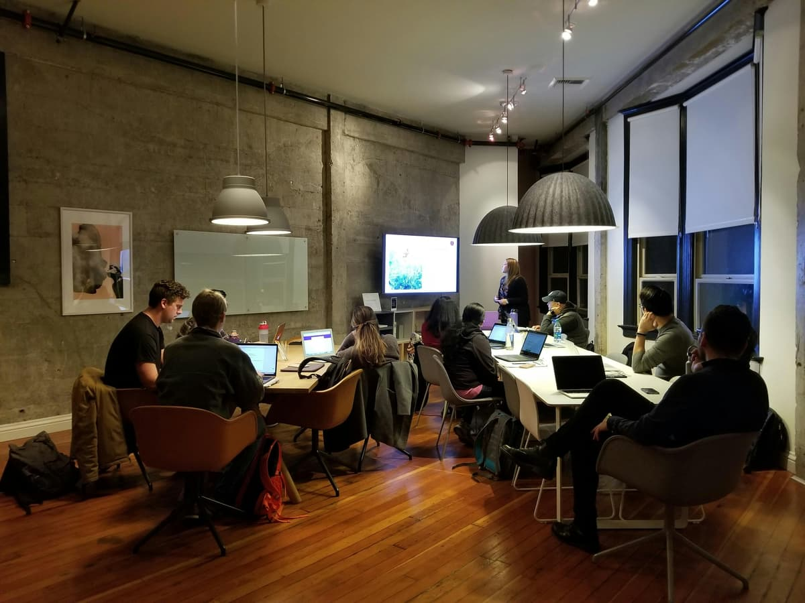

Altalogik nasce da ingegneri che si sono stancati di vedere le aziende sprecare ore su processi che il software poteva risolvere in modo permanente.

Altalogik nasce nel 2016 da un'osservazione diretta: la maggior parte dei problemi operativi delle PMI italiane non erano problemi di strategia, erano problemi di strumenti. Aziende che fatturavano milioni gestivano ordini su Excel, comunicavano su WhatsApp, perdevano dati nei passaggi di mano.
Abbiamo deciso di costruire software che risolvesse questi problemi alla radice — non con soluzioni generiche adattate, ma con sistemi progettati intorno ai processi reali di ogni cliente.
Oggi siamo un team di 12 tra sviluppatori, designer e ingegneri di processo. Abbiamo consegnato oltre 120 progetti in settori che vanno dall'automotive al healthcare, dalla logistica al fintech.
// i nostri principi
Ogni progetto inizia con un'analisi dei processi reali, non con una proposta commerciale. Se non capiamo il problema, non scriviamo una riga di codice.
Scriviamo codice documentato, testato e mantenibile. Il cliente non deve tornare da noi ogni volta che qualcosa cambia — anche se siamo felici quando lo fa.
Non aggiungiamo complessità per sembrare più preziosi. Ogni schermata, ogni campo, ogni automazione deve giustificare la propria esistenza con un impatto misurabile.
Definiamo i KPI di successo prima di iniziare e li misuriamo dopo. Se il sistema non produce il risultato atteso, è un problema nostro da risolvere, non una variabile esterna.